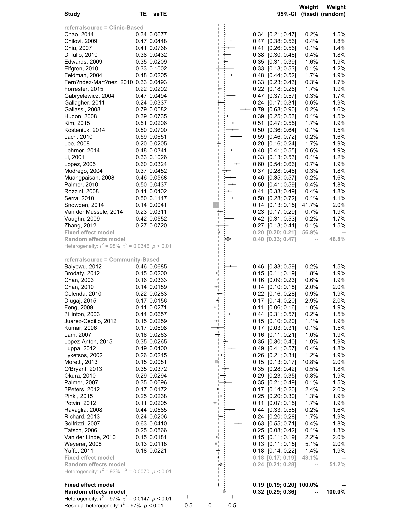
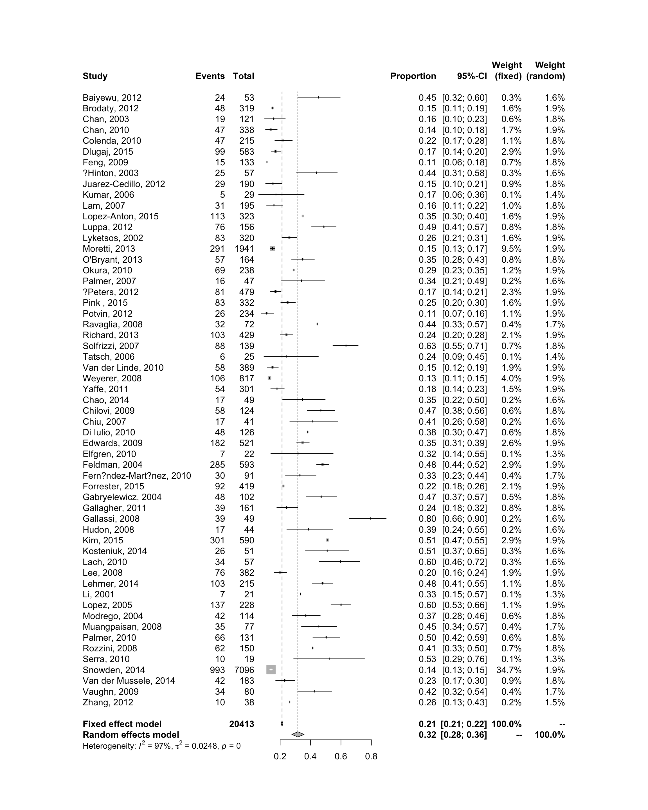

Exercise 1 - ismail (Prevalence data)
Then we read the csv file without setting the working directory, you can refer to this chapter 1.1.
| AuthorYear | countrycontinent | numberofparticipants | rate | events | diagnosisofdepression | referralsource | author | year | referral |
|---|---|---|---|---|---|---|---|---|---|
| Baiyewu, 2012 | Nigeria, Africa | 53 | 0.46 | 24 | NPI | Community-Based | ?Baiyewu | 2012 | 1 |
| Brodaty, 2012 | Australia, Australia | 319 | 0.15 | 48 | NPI | Community-Based | Brodaty | 2012 | 1 |
| Chan, 2003 | USA, North America | 121 | 0.16 | 19 | NPI | Community-Based | Chan | 2003 | 1 |
| Chan, 2010 | Hong Kong, Asia | 338 | 0.14 | 47 | NPI | Community-Based | Chan | 2010 | 1 |
| Colenda, 2010 | USA, North America | 215 | 0.22 | 47 | DSM | Community-Based | Colenda | 2010 | 1 |
The meaning of covariates in data
| Covariates | Meaning |
|---|---|
| numberofparticipants | number of participants |
| rate | prevalence of each study |
| events | number of events |
| AuthorYear | name of study |
1.1 Method 1 - Binomial distribution
1.1a. Generate new variable for variance
First of all, we have to generate a new variable for the variance of the rate. You can find the details for the formula on page 10 of the handout, which is \(var(p)={p*(1-p)}/n\). Then, we can obtain standard error from variance, consequently.
# Generate a new variable for the variance of rate
ismail$ratevar <- (ismail$rate*(1-ismail$rate))/ismail$numberofparticipants
# Generate SE = squared root of ratevar
ismail$ratese <- sqrt(ismail$ratevar)(This generates the necessary input for the metagen command)
1.1b. Use metagen to carry out the meta-analysis
Use command metagen in the meta package
# Use metagen to carry out the meta-analysis
ismail.gen <- metagen(rate, ratese, studlab = AuthorYear, data = ismail)
ismail.gen## 95%-CI %W(fixed) %W(random)
## Baiyewu, 2012 0.4600 [0.3258; 0.5942] 0.2 1.5
## Brodaty, 2012 0.1500 [0.1108; 0.1892] 1.8 1.9
## Chan, 2003 0.1600 [0.0947; 0.2253] 0.6 1.9
## Chan, 2010 0.1400 [0.1030; 0.1770] 2.0 2.0
## Colenda, 2010 0.2200 [0.1646; 0.2754] 0.9 1.9
## Dlugaj, 2015 0.1700 [0.1395; 0.2005] 2.9 2.0
## Feng, 2009 0.1100 [0.0568; 0.1632] 1.0 1.9
## ?Hinton, 2003 0.4400 [0.3111; 0.5689] 0.2 1.5
## Juarez-Cedillo, 2012 0.1500 [0.0992; 0.2008] 1.1 1.9
## Kumar, 2006 0.1700 [0.0333; 0.3067] 0.1 1.5
## Lam, 2007 0.1600 [0.1085; 0.2115] 1.0 1.9
## Lopez-Anton, 2015 0.3500 [0.2980; 0.4020] 1.0 1.9
## Luppa, 2012 0.4900 [0.4116; 0.5684] 0.4 1.8
## Lyketsos, 2002 0.2600 [0.2119; 0.3081] 1.2 1.9
## Moretti, 2013 0.1500 [0.1341; 0.1659] 10.8 2.0
## O'Bryant, 2013 0.3500 [0.2770; 0.4230] 0.5 1.8
## Okura, 2010 0.2900 [0.2324; 0.3476] 0.8 1.9
## Palmer, 2007 0.3500 [0.2136; 0.4864] 0.1 1.5
## ?Peters, 2012 0.1700 [0.1364; 0.2036] 2.4 2.0
## Pink , 2015 0.2500 [0.2034; 0.2966] 1.3 1.9
## Potvin, 2012 0.1100 [0.0699; 0.1501] 1.7 1.9
## Ravaglia, 2008 0.4400 [0.3253; 0.5547] 0.2 1.6
## Richard, 2013 0.2400 [0.1996; 0.2804] 1.7 1.9
## Solfrizzi, 2007 0.6300 [0.5497; 0.7103] 0.4 1.8
## Tatsch, 2006 0.2500 [0.0803; 0.4197] 0.1 1.3
## Van der Linde, 2010 0.1500 [0.1145; 0.1855] 2.2 2.0
## Weyerer, 2008 0.1300 [0.1069; 0.1531] 5.1 2.0
## Yaffe, 2011 0.1800 [0.1366; 0.2234] 1.4 1.9
## Chao, 2014 0.3400 [0.2074; 0.4726] 0.2 1.5
## Chilovi, 2009 0.4700 [0.3822; 0.5578] 0.4 1.8
## Chiu, 2007 0.4100 [0.2595; 0.5605] 0.1 1.4
## Di Iulio, 2010 0.3800 [0.2952; 0.4648] 0.4 1.8
## Edwards, 2009 0.3500 [0.3090; 0.3910] 1.6 1.9
## Elfgren, 2010 0.3300 [0.1335; 0.5265] 0.1 1.2
## Feldman, 2004 0.4800 [0.4398; 0.5202] 1.7 1.9
## Fern?ndez-Mart?nez, 2010 0.3300 [0.2334; 0.4266] 0.3 1.7
## Forrester, 2015 0.2200 [0.1803; 0.2597] 1.7 1.9
## Gabryelewicz, 2004 0.4700 [0.3731; 0.5669] 0.3 1.7
## Gallagher, 2011 0.2400 [0.1740; 0.3060] 0.6 1.9
## Gallassi, 2008 0.7900 [0.6760; 0.9040] 0.2 1.6
## Hudon, 2008 0.3900 [0.2459; 0.5341] 0.1 1.5
## Kim, 2015 0.5100 [0.4697; 0.5503] 1.7 1.9
## Kosteniuk, 2014 0.5000 [0.3628; 0.6372] 0.1 1.5
## Lach, 2010 0.5900 [0.4623; 0.7177] 0.2 1.6
## Lee, 2008 0.2000 [0.1599; 0.2401] 1.7 1.9
## Lehrner, 2014 0.4800 [0.4132; 0.5468] 0.6 1.9
## Li, 2001 0.3300 [0.1289; 0.5311] 0.1 1.2
## Lopez, 2005 0.6000 [0.5364; 0.6636] 0.7 1.9
## Modrego, 2004 0.3700 [0.2814; 0.4586] 0.3 1.8
## Muangpaisan, 2008 0.4600 [0.3487; 0.5713] 0.2 1.6
## Palmer, 2010 0.5000 [0.4144; 0.5856] 0.4 1.8
## Rozzini, 2008 0.4100 [0.3313; 0.4887] 0.4 1.8
## Serra, 2010 0.5000 [0.2752; 0.7248] 0.1 1.1
## Snowden, 2014 0.1400 [0.1319; 0.1481] 41.7 2.0
## Van der Mussele, 2014 0.2300 [0.1690; 0.2910] 0.7 1.9
## Vaughn, 2009 0.4200 [0.3118; 0.5282] 0.2 1.7
## Zhang, 2012 0.2700 [0.1288; 0.4112] 0.1 1.5
##
## Number of studies combined: k = 57
##
## 95%-CI z p-value
## Fixed effect model 0.1947 [0.1894; 0.1999] 73.15 0
## Random effects model 0.3223 [0.2887; 0.3559] 18.80 < 0.0001
##
## Quantifying heterogeneity:
## tau^2 = 0.0147; H = 5.55 [5.18; 5.95]; I^2 = 96.8% [96.3%; 97.2%]
##
## Test of heterogeneity:
## Q d.f. p-value
## 1725.70 56 < 0.0001
##
## Details on meta-analytical method:
## - Inverse variance method
## - DerSimonian-Laird estimator for tau^21.1c. Forest plot
If the forest plot cannot be seen fully, we can save this plot as pdf via the following command.
# Save forest plot as pdf #
pdf("~/Desktop/meta/Lab_day2/ismail.pdf",height=15,width=12)
forest(ismail.gen)
dev.off()## quartz_off_screen
## 21.1d. Subgroup Analysis by referral source
Let’s conduct subgroup analysis to explore the potential sources of the huge observed heterogeneity
ismail.gen.sub<-metagen(rate, ratese, studlab = AuthorYear, byvar = referralsource, data = ismail)
ismail.gen.sub## 95%-CI %W(fixed) %W(random)
## Baiyewu, 2012 0.4600 [0.3258; 0.5942] 0.2 1.5
## Brodaty, 2012 0.1500 [0.1108; 0.1892] 1.8 1.9
## Chan, 2003 0.1600 [0.0947; 0.2253] 0.6 1.9
## Chan, 2010 0.1400 [0.1030; 0.1770] 2.0 2.0
## Colenda, 2010 0.2200 [0.1646; 0.2754] 0.9 1.9
## Dlugaj, 2015 0.1700 [0.1395; 0.2005] 2.9 2.0
## Feng, 2009 0.1100 [0.0568; 0.1632] 1.0 1.9
## ?Hinton, 2003 0.4400 [0.3111; 0.5689] 0.2 1.5
## Juarez-Cedillo, 2012 0.1500 [0.0992; 0.2008] 1.1 1.9
## Kumar, 2006 0.1700 [0.0333; 0.3067] 0.1 1.5
## Lam, 2007 0.1600 [0.1085; 0.2115] 1.0 1.9
## Lopez-Anton, 2015 0.3500 [0.2980; 0.4020] 1.0 1.9
## Luppa, 2012 0.4900 [0.4116; 0.5684] 0.4 1.8
## Lyketsos, 2002 0.2600 [0.2119; 0.3081] 1.2 1.9
## Moretti, 2013 0.1500 [0.1341; 0.1659] 10.8 2.0
## O'Bryant, 2013 0.3500 [0.2770; 0.4230] 0.5 1.8
## Okura, 2010 0.2900 [0.2324; 0.3476] 0.8 1.9
## Palmer, 2007 0.3500 [0.2136; 0.4864] 0.1 1.5
## ?Peters, 2012 0.1700 [0.1364; 0.2036] 2.4 2.0
## Pink , 2015 0.2500 [0.2034; 0.2966] 1.3 1.9
## Potvin, 2012 0.1100 [0.0699; 0.1501] 1.7 1.9
## Ravaglia, 2008 0.4400 [0.3253; 0.5547] 0.2 1.6
## Richard, 2013 0.2400 [0.1996; 0.2804] 1.7 1.9
## Solfrizzi, 2007 0.6300 [0.5497; 0.7103] 0.4 1.8
## Tatsch, 2006 0.2500 [0.0803; 0.4197] 0.1 1.3
## Van der Linde, 2010 0.1500 [0.1145; 0.1855] 2.2 2.0
## Weyerer, 2008 0.1300 [0.1069; 0.1531] 5.1 2.0
## Yaffe, 2011 0.1800 [0.1366; 0.2234] 1.4 1.9
## Chao, 2014 0.3400 [0.2074; 0.4726] 0.2 1.5
## Chilovi, 2009 0.4700 [0.3822; 0.5578] 0.4 1.8
## Chiu, 2007 0.4100 [0.2595; 0.5605] 0.1 1.4
## Di Iulio, 2010 0.3800 [0.2952; 0.4648] 0.4 1.8
## Edwards, 2009 0.3500 [0.3090; 0.3910] 1.6 1.9
## Elfgren, 2010 0.3300 [0.1335; 0.5265] 0.1 1.2
## Feldman, 2004 0.4800 [0.4398; 0.5202] 1.7 1.9
## Fern?ndez-Mart?nez, 2010 0.3300 [0.2334; 0.4266] 0.3 1.7
## Forrester, 2015 0.2200 [0.1803; 0.2597] 1.7 1.9
## Gabryelewicz, 2004 0.4700 [0.3731; 0.5669] 0.3 1.7
## Gallagher, 2011 0.2400 [0.1740; 0.3060] 0.6 1.9
## Gallassi, 2008 0.7900 [0.6760; 0.9040] 0.2 1.6
## Hudon, 2008 0.3900 [0.2459; 0.5341] 0.1 1.5
## Kim, 2015 0.5100 [0.4697; 0.5503] 1.7 1.9
## Kosteniuk, 2014 0.5000 [0.3628; 0.6372] 0.1 1.5
## Lach, 2010 0.5900 [0.4623; 0.7177] 0.2 1.6
## Lee, 2008 0.2000 [0.1599; 0.2401] 1.7 1.9
## Lehrner, 2014 0.4800 [0.4132; 0.5468] 0.6 1.9
## Li, 2001 0.3300 [0.1289; 0.5311] 0.1 1.2
## Lopez, 2005 0.6000 [0.5364; 0.6636] 0.7 1.9
## Modrego, 2004 0.3700 [0.2814; 0.4586] 0.3 1.8
## Muangpaisan, 2008 0.4600 [0.3487; 0.5713] 0.2 1.6
## Palmer, 2010 0.5000 [0.4144; 0.5856] 0.4 1.8
## Rozzini, 2008 0.4100 [0.3313; 0.4887] 0.4 1.8
## Serra, 2010 0.5000 [0.2752; 0.7248] 0.1 1.1
## Snowden, 2014 0.1400 [0.1319; 0.1481] 41.7 2.0
## Van der Mussele, 2014 0.2300 [0.1690; 0.2910] 0.7 1.9
## Vaughn, 2009 0.4200 [0.3118; 0.5282] 0.2 1.7
## Zhang, 2012 0.2700 [0.1288; 0.4112] 0.1 1.5
## referralsource
## Baiyewu, 2012 2
## Brodaty, 2012 2
## Chan, 2003 2
## Chan, 2010 2
## Colenda, 2010 2
## Dlugaj, 2015 2
## Feng, 2009 2
## ?Hinton, 2003 2
## Juarez-Cedillo, 2012 2
## Kumar, 2006 2
## Lam, 2007 2
## Lopez-Anton, 2015 2
## Luppa, 2012 2
## Lyketsos, 2002 2
## Moretti, 2013 2
## O'Bryant, 2013 2
## Okura, 2010 2
## Palmer, 2007 2
## ?Peters, 2012 2
## Pink , 2015 2
## Potvin, 2012 2
## Ravaglia, 2008 2
## Richard, 2013 2
## Solfrizzi, 2007 2
## Tatsch, 2006 2
## Van der Linde, 2010 2
## Weyerer, 2008 2
## Yaffe, 2011 2
## Chao, 2014 1
## Chilovi, 2009 1
## Chiu, 2007 1
## Di Iulio, 2010 1
## Edwards, 2009 1
## Elfgren, 2010 1
## Feldman, 2004 1
## Fern?ndez-Mart?nez, 2010 1
## Forrester, 2015 1
## Gabryelewicz, 2004 1
## Gallagher, 2011 1
## Gallassi, 2008 1
## Hudon, 2008 1
## Kim, 2015 1
## Kosteniuk, 2014 1
## Lach, 2010 1
## Lee, 2008 1
## Lehrner, 2014 1
## Li, 2001 1
## Lopez, 2005 1
## Modrego, 2004 1
## Muangpaisan, 2008 1
## Palmer, 2010 1
## Rozzini, 2008 1
## Serra, 2010 1
## Snowden, 2014 1
## Van der Mussele, 2014 1
## Vaughn, 2009 1
## Zhang, 2012 1
##
## Number of studies combined: k = 57
##
## 95%-CI z p-value
## Fixed effect model 0.1947 [0.1894; 0.1999] 73.15 0
## Random effects model 0.3223 [0.2887; 0.3559] 18.80 < 0.0001
##
## Quantifying heterogeneity:
## tau^2 = 0.0147; H = 5.55 [5.18; 5.95]; I^2 = 96.8% [96.3%; 97.2%]
##
## Quantifying residual heterogeneity:
## H = 5.57 [5.20; 5.98]; I^2 = 96.8% [96.3%; 97.2%]
##
## Test of heterogeneity:
## Q d.f. p-value
## 1725.70 56 < 0.0001
##
## Results for subgroups (fixed effect model):
## k 95%-CI Q
## referralsource = Clinic-Based 29 0.2043 [0.1974; 0.2113] 1300.61
## referralsource = Community-Based 28 0.1819 [0.1739; 0.1898] 407.59
## tau^2 I^2
## referralsource = Clinic-Based 0.0346 97.8%
## referralsource = Community-Based 0.0070 93.4%
##
## Test for subgroup differences (fixed effect model):
## Q d.f. p-value
## Between groups 17.50 1 < 0.0001
## Within groups 1708.21 55 < 0.0001
##
## Results for subgroups (random effects model):
## k 95%-CI Q
## referralsource = Clinic-Based 29 0.4023 [0.3317; 0.4729] 1300.61
## referralsource = Community-Based 28 0.2426 [0.2091; 0.2762] 407.59
## tau^2 I^2
## referralsource = Clinic-Based 0.0346 97.8%
## referralsource = Community-Based 0.0070 93.4%
##
## Test for subgroup differences (random effects model):
## Q d.f. p-value
## Between groups 16.03 1 < 0.0001
##
## Details on meta-analytical method:
## - Inverse variance method
## - DerSimonian-Laird estimator for tau^2
Again, if the forest plot cannot be seen fully, we can save this plot as pdf file.
# Save forest plot as pdf #
pdf("~/Desktop/meta/Lab_day2/ismail_sub.pdf",height=15,width=12)
forest(ismail.gen.sub)
dev.off()## quartz_off_screen
## 21.2 Method 2 - Logit Transformation
1.2a. Use metaprop to carry out the meta-analysis
Here, we will use command metaprop in the meta package to conduct the logit transformation of prevelance meta analysis.
Note that the commandmetaprop uses “number of events” and “number of participants”; however, the metagen uses “rate” and “ratese”.
The metaprop command is specially designed for the prevalence meta anylsis.
Now type :
You can specify the type of summary measure you want to use: sm=(“PLOGIT”, “PAS”, “PFT”, “PLN”, “PRAW”)
| Transformations | R_code |
|---|---|
| Logit | PLOGIT |
| Arcsine | PAS |
| Double Arcsine | PFT |
| Log | PLN |
| Raw | PRAW |
Then, let’s see the result of logit transformation meta analysis.
## proportion 95%-CI %W(fixed) %W(random)
## Baiyewu, 2012 0.4528 [0.3156; 0.5955] 0.4 1.7
## Brodaty, 2012 0.1505 [0.1131; 0.1945] 1.3 1.8
## Chan, 2003 0.1570 [0.0973; 0.2343] 0.5 1.7
## Chan, 2010 0.1391 [0.1040; 0.1806] 1.3 1.8
## Colenda, 2010 0.2186 [0.1653; 0.2799] 1.1 1.8
## Dlugaj, 2015 0.1698 [0.1402; 0.2028] 2.6 1.9
## Feng, 2009 0.1128 [0.0645; 0.1792] 0.4 1.7
## ?Hinton, 2003 0.4386 [0.3074; 0.5764] 0.4 1.7
## Juarez-Cedillo, 2012 0.1526 [0.1047; 0.2118] 0.8 1.8
## Kumar, 2006 0.1724 [0.0585; 0.3577] 0.1 1.4
## Lam, 2007 0.1590 [0.1106; 0.2180] 0.8 1.8
## Lopez-Anton, 2015 0.3498 [0.2979; 0.4046] 2.3 1.9
## Luppa, 2012 0.4872 [0.4065; 0.5684] 1.2 1.8
## Lyketsos, 2002 0.2594 [0.2122; 0.3111] 1.9 1.9
## Moretti, 2013 0.1499 [0.1343; 0.1666] 7.7 1.9
## O'Bryant, 2013 0.3476 [0.2750; 0.4257] 1.2 1.8
## Okura, 2010 0.2899 [0.2331; 0.3520] 1.5 1.8
## Palmer, 2007 0.3404 [0.2086; 0.4931] 0.3 1.6
## ?Peters, 2012 0.1691 [0.1366; 0.2057] 2.1 1.9
## Pink , 2015 0.2500 [0.2043; 0.3002] 1.9 1.9
## Potvin, 2012 0.1111 [0.0739; 0.1586] 0.7 1.8
## Ravaglia, 2008 0.4444 [0.3272; 0.5664] 0.6 1.7
## Richard, 2013 0.2401 [0.2004; 0.2834] 2.4 1.9
## Solfrizzi, 2007 0.6331 [0.5472; 0.7132] 1.0 1.8
## Tatsch, 2006 0.2400 [0.0936; 0.4513] 0.1 1.4
## Van der Linde, 2010 0.1491 [0.1152; 0.1884] 1.5 1.8
## Weyerer, 2008 0.1297 [0.1075; 0.1547] 2.9 1.9
## Yaffe, 2011 0.1794 [0.1377; 0.2275] 1.4 1.8
## Chao, 2014 0.3469 [0.2167; 0.4964] 0.3 1.7
## Chilovi, 2009 0.4677 [0.3776; 0.5594] 1.0 1.8
## Chiu, 2007 0.4146 [0.2632; 0.5789] 0.3 1.6
## Di Iulio, 2010 0.3810 [0.2959; 0.4717] 0.9 1.8
## Edwards, 2009 0.3493 [0.3084; 0.3920] 3.7 1.9
## Elfgren, 2010 0.3182 [0.1386; 0.5487] 0.1 1.4
## Feldman, 2004 0.4806 [0.4397; 0.5217] 4.6 1.9
## Fern?ndez-Mart?nez, 2010 0.3297 [0.2347; 0.4361] 0.6 1.8
## Forrester, 2015 0.2196 [0.1808; 0.2623] 2.2 1.9
## Gabryelewicz, 2004 0.4706 [0.3710; 0.5720] 0.8 1.8
## Gallagher, 2011 0.2422 [0.1783; 0.3159] 0.9 1.8
## Gallassi, 2008 0.7959 [0.6566; 0.8976] 0.2 1.6
## Hudon, 2008 0.3864 [0.2436; 0.5450] 0.3 1.6
## Kim, 2015 0.5102 [0.4690; 0.5512] 4.6 1.9
## Kosteniuk, 2014 0.5098 [0.3660; 0.6525] 0.4 1.7
## Lach, 2010 0.5965 [0.4582; 0.7244] 0.4 1.7
## Lee, 2008 0.1990 [0.1601; 0.2426] 1.9 1.9
## Lehrner, 2014 0.4791 [0.4107; 0.5481] 1.7 1.8
## Li, 2001 0.3333 [0.1459; 0.5697] 0.1 1.4
## Lopez, 2005 0.6009 [0.5341; 0.6650] 1.7 1.8
## Modrego, 2004 0.3684 [0.2800; 0.4639] 0.8 1.8
## Muangpaisan, 2008 0.4545 [0.3406; 0.5721] 0.6 1.8
## Palmer, 2010 0.5038 [0.4152; 0.5923] 1.0 1.8
## Rozzini, 2008 0.4133 [0.3336; 0.4965] 1.1 1.8
## Serra, 2010 0.5263 [0.2886; 0.7555] 0.1 1.4
## Snowden, 2014 0.1399 [0.1319; 0.1482] 26.7 1.9
## Van der Mussele, 2014 0.2295 [0.1707; 0.2973] 1.0 1.8
## Vaughn, 2009 0.4250 [0.3151; 0.5406] 0.6 1.8
## Zhang, 2012 0.2632 [0.1340; 0.4310] 0.2 1.6
##
## Number of studies combined: k = 57
##
## proportion 95%-CI z p-value
## Fixed effect model 0.2411 [0.2348; 0.2475] -- --
## Random effects model 0.3098 [0.2670; 0.3561] -- --
##
## Quantifying heterogeneity:
## tau^2 = 0.5956; H = 5.65 [5.28; 6.05]; I^2 = 96.9% [96.4%; 97.3%]
##
## Test of heterogeneity:
## Q d.f. p-value
## 1788.55 56 0
##
## Details on meta-analytical method:
## - Inverse variance method
## - DerSimonian-Laird estimator for tau^2
## - Logit transformation
## - Clopper-Pearson confidence interval for individual studies1.2b. Forest plot

Again, if the forest plot cannot be seen fully, we can save this plot as pdf file.
## quartz_off_screen
## 21.3 Method 3 - Freeman-Tukey Double Arcsine Transformation
1.3a. Use metaprop to carry out the meta-analysis
Similar to Logit Transforamtion, the Double Arcsine Transformation is conducted by using metaprop command in meta package. The only difference is that Double Arcsine Transformation uses sm="PFT" instead of sm="PLOGIT".
Now type :
ismail.ft <- metaprop(event = events, n = numberofparticipants, studlab = AuthorYear, data = ismail, method = "Inverse", sm = "PFT")
ismail.ft## proportion 95%-CI %W(fixed) %W(random)
## Baiyewu, 2012 0.4528 [0.3156; 0.5955] 0.3 1.6
## Brodaty, 2012 0.1505 [0.1131; 0.1945] 1.6 1.9
## Chan, 2003 0.1570 [0.0973; 0.2343] 0.6 1.8
## Chan, 2010 0.1391 [0.1040; 0.1806] 1.7 1.9
## Colenda, 2010 0.2186 [0.1653; 0.2799] 1.1 1.8
## Dlugaj, 2015 0.1698 [0.1402; 0.2028] 2.9 1.9
## Feng, 2009 0.1128 [0.0645; 0.1792] 0.7 1.8
## ?Hinton, 2003 0.4386 [0.3074; 0.5764] 0.3 1.6
## Juarez-Cedillo, 2012 0.1526 [0.1047; 0.2118] 0.9 1.8
## Kumar, 2006 0.1724 [0.0585; 0.3577] 0.1 1.4
## Lam, 2007 0.1590 [0.1106; 0.2180] 1.0 1.8
## Lopez-Anton, 2015 0.3498 [0.2979; 0.4046] 1.6 1.9
## Luppa, 2012 0.4872 [0.4065; 0.5684] 0.8 1.8
## Lyketsos, 2002 0.2594 [0.2122; 0.3111] 1.6 1.9
## Moretti, 2013 0.1499 [0.1343; 0.1666] 9.5 1.9
## O'Bryant, 2013 0.3476 [0.2750; 0.4257] 0.8 1.8
## Okura, 2010 0.2899 [0.2331; 0.3520] 1.2 1.9
## Palmer, 2007 0.3404 [0.2086; 0.4931] 0.2 1.6
## ?Peters, 2012 0.1691 [0.1366; 0.2057] 2.3 1.9
## Pink , 2015 0.2500 [0.2043; 0.3002] 1.6 1.9
## Potvin, 2012 0.1111 [0.0739; 0.1586] 1.1 1.9
## Ravaglia, 2008 0.4444 [0.3272; 0.5664] 0.4 1.7
## Richard, 2013 0.2401 [0.2004; 0.2834] 2.1 1.9
## Solfrizzi, 2007 0.6331 [0.5472; 0.7132] 0.7 1.8
## Tatsch, 2006 0.2400 [0.0936; 0.4513] 0.1 1.4
## Van der Linde, 2010 0.1491 [0.1152; 0.1884] 1.9 1.9
## Weyerer, 2008 0.1297 [0.1075; 0.1547] 4.0 1.9
## Yaffe, 2011 0.1794 [0.1377; 0.2275] 1.5 1.9
## Chao, 2014 0.3469 [0.2167; 0.4964] 0.2 1.6
## Chilovi, 2009 0.4677 [0.3776; 0.5594] 0.6 1.8
## Chiu, 2007 0.4146 [0.2632; 0.5789] 0.2 1.6
## Di Iulio, 2010 0.3810 [0.2959; 0.4717] 0.6 1.8
## Edwards, 2009 0.3493 [0.3084; 0.3920] 2.6 1.9
## Elfgren, 2010 0.3182 [0.1386; 0.5487] 0.1 1.3
## Feldman, 2004 0.4806 [0.4397; 0.5217] 2.9 1.9
## Fern?ndez-Mart?nez, 2010 0.3297 [0.2347; 0.4361] 0.4 1.7
## Forrester, 2015 0.2196 [0.1808; 0.2623] 2.1 1.9
## Gabryelewicz, 2004 0.4706 [0.3710; 0.5720] 0.5 1.8
## Gallagher, 2011 0.2422 [0.1783; 0.3159] 0.8 1.8
## Gallassi, 2008 0.7959 [0.6566; 0.8976] 0.2 1.6
## Hudon, 2008 0.3864 [0.2436; 0.5450] 0.2 1.6
## Kim, 2015 0.5102 [0.4690; 0.5512] 2.9 1.9
## Kosteniuk, 2014 0.5098 [0.3660; 0.6525] 0.3 1.6
## Lach, 2010 0.5965 [0.4582; 0.7244] 0.3 1.6
## Lee, 2008 0.1990 [0.1601; 0.2426] 1.9 1.9
## Lehrner, 2014 0.4791 [0.4107; 0.5481] 1.1 1.8
## Li, 2001 0.3333 [0.1459; 0.5697] 0.1 1.3
## Lopez, 2005 0.6009 [0.5341; 0.6650] 1.1 1.9
## Modrego, 2004 0.3684 [0.2800; 0.4639] 0.6 1.8
## Muangpaisan, 2008 0.4545 [0.3406; 0.5721] 0.4 1.7
## Palmer, 2010 0.5038 [0.4152; 0.5923] 0.6 1.8
## Rozzini, 2008 0.4133 [0.3336; 0.4965] 0.7 1.8
## Serra, 2010 0.5263 [0.2886; 0.7555] 0.1 1.3
## Snowden, 2014 0.1399 [0.1319; 0.1482] 34.7 1.9
## Van der Mussele, 2014 0.2295 [0.1707; 0.2973] 0.9 1.8
## Vaughn, 2009 0.4250 [0.3151; 0.5406] 0.4 1.7
## Zhang, 2012 0.2632 [0.1340; 0.4310] 0.2 1.5
##
## Number of studies combined: k = 57
##
## proportion 95%-CI z p-value
## Fixed effect model 0.2124 [0.2067; 0.2181] -- --
## Random effects model 0.3165 [0.2768; 0.3576] -- --
##
## Quantifying heterogeneity:
## tau^2 = 0.0248; H = 5.67 [5.30; 6.08]; I^2 = 96.9% [96.4%; 97.3%]
##
## Test of heterogeneity:
## Q d.f. p-value
## 1802.03 56 0
##
## Details on meta-analytical method:
## - Inverse variance method
## - DerSimonian-Laird estimator for tau^2
## - Freeman-Tukey double arcsine transformation
## - Clopper-Pearson confidence interval for individual studies1.3b. Forest plot

Again, if the forest plot cannot be seen fully, we can save this plot as pdf file.
## quartz_off_screen
## 21.4 Method 4 - GLMM Method for prevalence data
1.4a. Use lme4 to carry out the meta-analysis
The first method of GLMM method for prevalence meta analysis is to use the lme4 package.
However, this package is not sepcially designed for meta analysis, so some results and some plots cannot be obtained by it.
But this package is more flexible for any kind of data.
ismail.glm <- glmer(events/numberofparticipants ~ (1 | AuthorYear), data = ismail, binomial, weights=numberofparticipants, nAGQ = 10)
ismail.glm## Generalized linear mixed model fit by maximum likelihood (Adaptive
## Gauss-Hermite Quadrature, nAGQ = 10) [glmerMod]
## Family: binomial ( logit )
## Formula: events/numberofparticipants ~ (1 | AuthorYear)
## Data: ismail
## Weights: numberofparticipants
## AIC BIC logLik deviance df.resid
## 222 226 -109 218 55
## Random effects:
## Groups Name Std.Dev.
## AuthorYear (Intercept) 0.73
## Number of obs: 57, groups: AuthorYear, 57
## Fixed Effects:
## (Intercept)
## -0.809It is exactly a Random Intercept Logistic Regression Model.
- nAGQ is integer scalar, which means the number of points per axis for evaluating the adaptive Gauss-Hermite approximation to the log-likelihood. Different nAGQ may give different model performance.
- weights is an optional vector of ‘prior weights’ to be used in the fitting process.
- You can see the details by typing
help("glmer").
To see the summary of the model, please type
## Generalized linear mixed model fit by maximum likelihood (Adaptive
## Gauss-Hermite Quadrature, nAGQ = 10) [glmerMod]
## Family: binomial ( logit )
## Formula: events/numberofparticipants ~ (1 | AuthorYear)
## Data: ismail
## Weights: numberofparticipants
##
## AIC BIC logLik deviance df.resid
## 222 226 -109 218 55
##
## Scaled residuals:
## Min 1Q Median 3Q Max
## -0.538 -0.136 0.038 0.217 1.078
##
## Random effects:
## Groups Name Variance Std.Dev.
## AuthorYear (Intercept) 0.533 0.73
## Number of obs: 57, groups: AuthorYear, 57
##
## Fixed effects:
## Estimate Std. Error z value Pr(>|z|)
## (Intercept) -0.809 0.101 -7.99 1.3e-15 ***
## ---
## Signif. codes: 0 '***' 0.001 '**' 0.01 '*' 0.05 '.' 0.1 ' ' 1You can see that the standard deviation of random effets Std.Dev = 0.73, which is exactly the square root of estimated tau^2. So you can type the command tau_square = 0.73^2 to obtain the estimated tau^2.
## [1] 0.533Then, the random intercept is -0.809, which can be transformed to pooled prevalence by \(p=exp(b0)/(1+exp(b0))\).
Now type :
## [1] 0.308You can see that the pooled prevalence of GLMM method is 0.308.
1.4b. Use metaprop to carry out the meta-analysis
Similar to Transformation methods above, the GLMM method can be also conducted by using metaprop command in meta package. The only difference is that GLMM uses method ="GLMM" instead of method ="Inverse".
ismail.glmm <- metaprop(event = events, n = numberofparticipants, studlab = AuthorYear, data = ismail, method = "GLMM")
ismail.glmm## proportion 95%-CI %W(fixed) %W(random)
## Baiyewu, 2012 0.4528 [0.3156; 0.5955] -- --
## Brodaty, 2012 0.1505 [0.1131; 0.1945] -- --
## Chan, 2003 0.1570 [0.0973; 0.2343] -- --
## Chan, 2010 0.1391 [0.1040; 0.1806] -- --
## Colenda, 2010 0.2186 [0.1653; 0.2799] -- --
## Dlugaj, 2015 0.1698 [0.1402; 0.2028] -- --
## Feng, 2009 0.1128 [0.0645; 0.1792] -- --
## ?Hinton, 2003 0.4386 [0.3074; 0.5764] -- --
## Juarez-Cedillo, 2012 0.1526 [0.1047; 0.2118] -- --
## Kumar, 2006 0.1724 [0.0585; 0.3577] -- --
## Lam, 2007 0.1590 [0.1106; 0.2180] -- --
## Lopez-Anton, 2015 0.3498 [0.2979; 0.4046] -- --
## Luppa, 2012 0.4872 [0.4065; 0.5684] -- --
## Lyketsos, 2002 0.2594 [0.2122; 0.3111] -- --
## Moretti, 2013 0.1499 [0.1343; 0.1666] -- --
## O'Bryant, 2013 0.3476 [0.2750; 0.4257] -- --
## Okura, 2010 0.2899 [0.2331; 0.3520] -- --
## Palmer, 2007 0.3404 [0.2086; 0.4931] -- --
## ?Peters, 2012 0.1691 [0.1366; 0.2057] -- --
## Pink , 2015 0.2500 [0.2043; 0.3002] -- --
## Potvin, 2012 0.1111 [0.0739; 0.1586] -- --
## Ravaglia, 2008 0.4444 [0.3272; 0.5664] -- --
## Richard, 2013 0.2401 [0.2004; 0.2834] -- --
## Solfrizzi, 2007 0.6331 [0.5472; 0.7132] -- --
## Tatsch, 2006 0.2400 [0.0936; 0.4513] -- --
## Van der Linde, 2010 0.1491 [0.1152; 0.1884] -- --
## Weyerer, 2008 0.1297 [0.1075; 0.1547] -- --
## Yaffe, 2011 0.1794 [0.1377; 0.2275] -- --
## Chao, 2014 0.3469 [0.2167; 0.4964] -- --
## Chilovi, 2009 0.4677 [0.3776; 0.5594] -- --
## Chiu, 2007 0.4146 [0.2632; 0.5789] -- --
## Di Iulio, 2010 0.3810 [0.2959; 0.4717] -- --
## Edwards, 2009 0.3493 [0.3084; 0.3920] -- --
## Elfgren, 2010 0.3182 [0.1386; 0.5487] -- --
## Feldman, 2004 0.4806 [0.4397; 0.5217] -- --
## Fern?ndez-Mart?nez, 2010 0.3297 [0.2347; 0.4361] -- --
## Forrester, 2015 0.2196 [0.1808; 0.2623] -- --
## Gabryelewicz, 2004 0.4706 [0.3710; 0.5720] -- --
## Gallagher, 2011 0.2422 [0.1783; 0.3159] -- --
## Gallassi, 2008 0.7959 [0.6566; 0.8976] -- --
## Hudon, 2008 0.3864 [0.2436; 0.5450] -- --
## Kim, 2015 0.5102 [0.4690; 0.5512] -- --
## Kosteniuk, 2014 0.5098 [0.3660; 0.6525] -- --
## Lach, 2010 0.5965 [0.4582; 0.7244] -- --
## Lee, 2008 0.1990 [0.1601; 0.2426] -- --
## Lehrner, 2014 0.4791 [0.4107; 0.5481] -- --
## Li, 2001 0.3333 [0.1459; 0.5697] -- --
## Lopez, 2005 0.6009 [0.5341; 0.6650] -- --
## Modrego, 2004 0.3684 [0.2800; 0.4639] -- --
## Muangpaisan, 2008 0.4545 [0.3406; 0.5721] -- --
## Palmer, 2010 0.5038 [0.4152; 0.5923] -- --
## Rozzini, 2008 0.4133 [0.3336; 0.4965] -- --
## Serra, 2010 0.5263 [0.2886; 0.7555] -- --
## Snowden, 2014 0.1399 [0.1319; 0.1482] -- --
## Van der Mussele, 2014 0.2295 [0.1707; 0.2973] -- --
## Vaughn, 2009 0.4250 [0.3151; 0.5406] -- --
## Zhang, 2012 0.2632 [0.1340; 0.4310] -- --
##
## Number of studies combined: k = 57
##
## proportion 95%-CI z p-value
## Fixed effect model 0.2248 [0.2191; 0.2305] -- --
## Random effects model 0.3081 [0.2675; 0.3519] -- --
##
## Quantifying heterogeneity:
## tau^2 = 0.5327; H = 5.35; I^2 = 96.5%
##
## Test of heterogeneity:
## Q d.f. p-value Test
## 1788.55 56 0 Wald-type
## 1844.15 56 0 Likelihood-Ratio
##
## Details on meta-analytical method:
## - Random intercept logistic regression model
## - Maximum-likelihood estimator for tau^2
## - Logit transformation
## - Clopper-Pearson confidence interval for individual studiesAs you can see, the tau^2 is 0.5327 and the pooled prevalence is 0.3081, and each is the same as the result we calculated from the GLMM result of lme4, respectively.